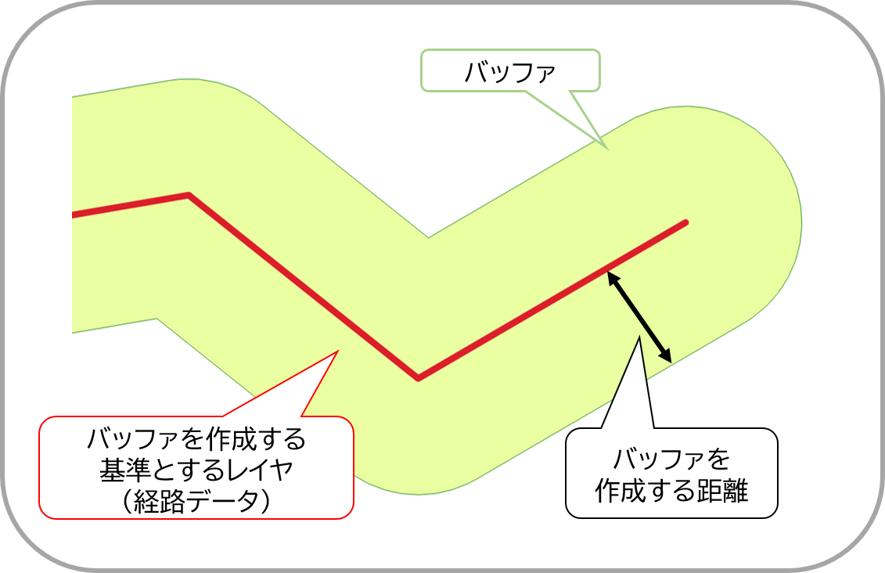
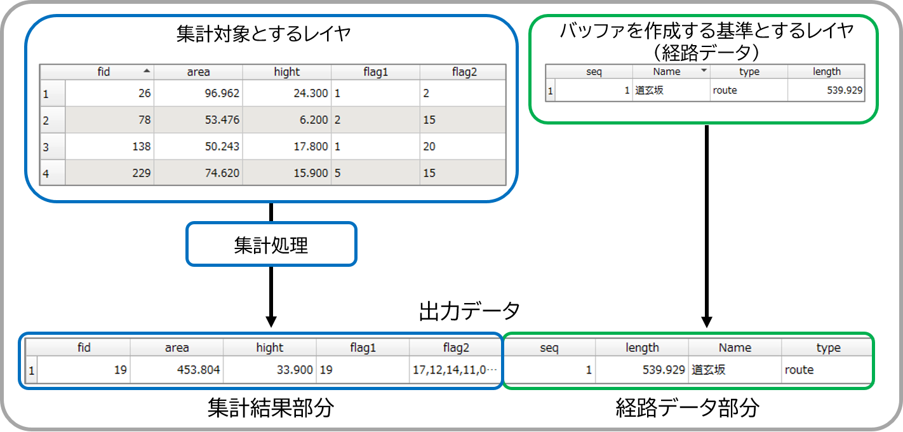

使用方法
本プラグインの実行方法を説明します。以下、QGISの言語設定は日本語として記載します。バージョンにより文言が異なる場合があることに留意ください。また、バッファ作成する処理の関係上、本プラグインの実行にあたっては、レイヤのCRS（座標参照系）について、平面直角座標系などのメートルを距離単位とするものに変換することを推奨します。
ここでは、下図のような経路データ（ラインレイヤ）と沿道の建物データ（ポリゴンレイヤ）を例として、本プラグインの実行手順を示します。

■データの準備
■経路データについて
新規に経路データを作成する場合、新規のシェープファイルを作成し、編集機能を有効化して経路データを作成してください。この際、シェープファイルのCRSは平面直角座標系(関東であれば6677)を指定してください。
また、経路データを作成する際は、QGIS上に地理院タイル等を表示して位置を確認した上で作成してください。
■沿道の建物データについて
PLATEAUのCityGMLをQGISにインポートする場合、以下の2点について対応してください。
●ジオメトリの確認と修正
データの形状によるジオメトリエラーを回避するため、QGISプロセッシングツールの「ジオメトリを修正」を使用して、ジオメトリを修正してください。
●CRSの設定
通常、CRS(座標参照系)は緯度経度座標系の6668となっていますが、本プラグインの使用に際しては、平面直角座標系への変更が必要です。
プロジェクトのCRS及び、レイヤのCRSを地物の座標に即した平面直角座標系(関東であれば6677)に変更してください。
また、CRSの変更が適切になされているか判断するため、QGIS上に地理院タイル等を表示して位置を確認してください。
【参考】
■プラグイン実行前の確認事項
プラグインを実行する前に、使用するレイヤについて以下の事項を確認してください。
■バッファを作成する基準とするレイヤ(経路データ)について
■集計対象とするレイヤ(沿道の建物データ)について
また、バッファを作成する基準とするレイヤ(経路データ)のうち、特定の経路のみを対象とする場合は、該当する経路をQGIS上で選択してください。
■実行手順
- メニュータブの[プラグイン]から本プラグインを選択、またはプラグインツールバー上のアイコンを選択して本プラグインを起動
※プロジェクトファイル上にベクタレイヤが１つも存在しない場合、本プラグインは起動しません - 本プラグインの設定画面において、各項目を設定

- バッファを作成する基準とするレイヤ(経路データ)を指定
- 手順3で指定したレイヤ(経路データ)において、経路ごとに一意となる属性(経路名称など)を指定
- 集計対象とするレイヤをプルダウンから指定
- QGIS上で選択した地物のみを対象としてバッファを作成する場合、[選択地物のみからバッファを作成する]をチェック
※地物を選択していない状態でチェックすると、処理時にエラーが発生します - バッファを作成する距離を指定。
※距離の単位はバッファを作成するレイヤのCRSに依存します

- 作成するバッファのセグメント数（頂点数）を指定
※セグメント数が大きいほど滑らかな円に近づきます。30程度を指定すれば本分析上で特段の支障はありません - 手順5で指定したレイヤについて、集計対象としない属性があれば[keep]列のチェックを解除
※デフォルトでは全属性を集計対象に指定 - 集計対象とする属性の集計方法を設定
- 保存先と、既存のファイルと重複しないようなファイル名称を指定
- ｢OK｣を押下して処理を実行し、手順11で指定した名称のレイヤを出力
※処理の過程上、一時的なレイヤとして｢output｣｢Bufferd｣が作成されますが、最終的な出力物ではないため確認は不要です
出力データについて
上記の手順で出力されたファイルでは、以下のように経路データの左側に、集計結果が格納されます。

■エラー時の対応
⇒QGISプロセッシングツールの「ジオメトリを修復」を適用し、適用後のレイヤを使用して再度処理を実行してください。
⇒実行手順5「集計対象とするレイヤをプルダウンから指定」を再度実行してください。
■属性の集計方法一覧
| 名称(stat) | 集計方法 | 対象データ型(type) |
|---|---|---|
| Max | 最大値 | 数値型 |
| Mean | 平均値 | 数値型 |
| Median | 中央値 | 数値型 |
| Min | 最小値 | 数値型 |
| sum | 合計値 | 数値型 |
| count | 地物数 | 数値型/文字列型 |
| uniquification | 重複なしで列挙 | 文字列型 |